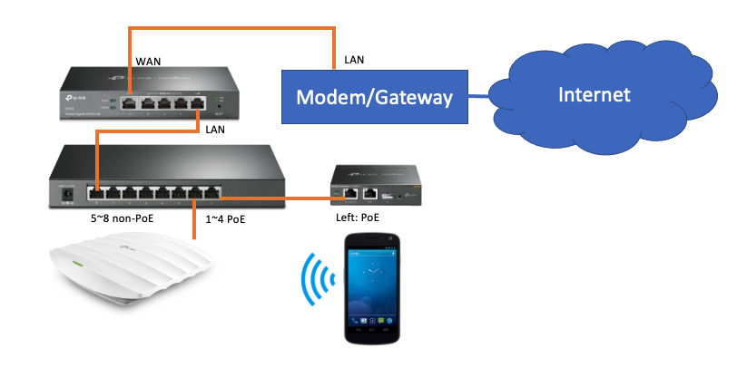

Example: Set up a basic network¶
This example demonstrates the most easy way to set up a basic network. TP-Link Omada cloud service was not involved in this set up.
Bill of material¶
ER605 (TL-R605) router
TL-SG2008P switch, 8-port gigabit switch with 4 port POE
EAP225
OC200
Topology¶
Connecting your devices with above topology
Connect the LAN port of your ISP gateway to the ER605 WAN port
Connect the ER605 LAN port to one of the TL-SG2008P non-PoE port (port 5 to port 8)
Connect the OC200 LAN port to one of the TL-SG2008P PoE port (port 1 to port 4)
Connect the EAP225 LAN port to one of the TL-SG2008P PoE port (port 1 to port 4)
Make sure all the devices have the latest firmware and with the factory default setting
Power them up and wait for the system checking and booting. The sequency is a little bit longer than the consumer products. Wait for 5 minutes and check the status light. If the OC200 Cloud LED is blinking. It means the OC200 has the Internet access everything is ready. If not, double check the wiring and reset the devices again to make sure they are with factory default settings.
Note
The ER605/ER7206 has default network set to 192.168.0.1. If your ISP gateway was set to the same local subnet, you can remove the ER605/ER7206 from the topology for now. We can add it back later.